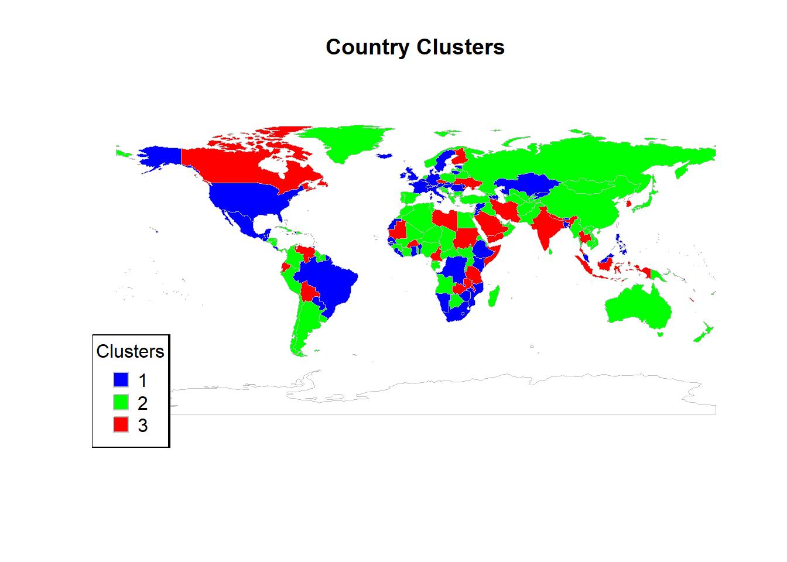

| Variable | Possible Implication to Immigration Inequality |
|---|---|
| Net migration rate | High net migration may indicate economic or social factors driving people to migrate, affecting inequality in host and origin countries. |
| Gini coefficient representing income inequality | Higher Gini coefficients suggest greater income inequality, which can be a push factor for emigration. |
| GDP per capita in purchasing power parity | Higher GDP per capita can attract immigrants seeking better economic opportunities, impacting local job markets. |
| Economist Intelligence Unit’s democracy index | Higher democracy index scores may attract immigrants seeking political stability and freedoms, influencing migration patterns. |
| Gross primary school enrollment for males | Higher enrollment rates can indicate better educational opportunities, which may attract families with children. |
| Gross primary school enrollment for females | Higher enrollment rates can indicate better educational opportunities, which may attract families with children. |
| Gross high school enrollment for males | Higher enrollment rates can indicate better educational opportunities, which may attract families with children. |
| Gross high school enrollment for females | Higher enrollment rates can indicate better educational opportunities, which may attract families with children. |
| Access to water in rural areas | Better access to water in rural areas can improve living conditions, potentially reducing rural-to-urban migration. |
| Total access to water | Overall better access to water can improve quality of life, reducing the need for migration driven by poor living conditions. |
| Access to sanitation in urban areas | Better sanitation in urban areas can attract rural migrants seeking improved living standards. |
| Access to sanitation in rural areas | Poor sanitation in rural areas can push people to migrate to urban areas or other countries with better living conditions. |
| Total access to sanitation | Overall better sanitation can improve health and quality of life, reducing migration driven by poor living conditions. |
| Rate of sexual violence | High rates of sexual violence can be a push factor for emigration, especially among vulnerable populations. |
| Rate of theft | High theft rates can contribute to insecurity, pushing people to migrate to safer areas. |
| Rate of assault | High assault rates can contribute to insecurity, pushing people to migrate to safer areas. |
| Rate of kidnapping | High kidnapping rates can contribute to insecurity, pushing people to migrate to safer areas. |
| Homicide rate | High homicide rates can contribute to insecurity, pushing people to migrate to safer areas. |
Osmotic Borders
A Study of Inequalities in International Migration
Dan Anthony Dorado ![]()
Jonathan Isip
Abstract
This study explores the intricate dynamics of international migration and the inequalities that arise from it, focusing on socio-economic, demographic, and political factors. Through a comprehensive analysis of data from reputable sources such as the United Nations, World Bank, and UNESCO, the research identifies key trends and patterns influencing migration. Findings reveal that higher GDP per capita is a major attractor for migrants, while income inequality within countries presents a complex relationship with migration rates. Political stability and governance significantly influence migration patterns, with higher levels of democracy attracting more migrants. Access to essential services such as water, sanitation, and healthcare facilities also emerged as crucial factors in migration decisions. The study contributes to several UN Sustainable Development Goals, including Decent Work and Economic Growth, Reduced Inequalities, Good Health and Well-being, and Clean Water and Sanitation. Future research recommendations include incorporating longitudinal data to understand the evolving causal mechanisms behind migration inequalities and exploring the qualitative aspects of migrants’ lived experiences. The study also emphasizes the need for targeted policy interventions to address migration inequalities. These include enhancing economic opportunities in source countries, promoting political stability, improving infrastructure and healthcare services, and fostering international cooperation to manage migration flows. By addressing these areas, the study aims to inform policymakers and contribute to the development of more equitable and sustainable migration systems, ultimately fostering a more inclusive global society.
Introduction
Background on international migration
The term “migrant” is not defined under international law but can be understood as “a person who moves away from his or her place of usual residence, whether within a country or across an international border, temporarily or permanently, and for a variety of reasons” (OIM, 2019). Migration thus refers to the act of movement from a person’s usual place of residence across, in the context of this paper, an international border. The freedom of movement is enshrined in Article 13 of the “Universal Declaration of Human Rights” (1948) which underpins current compacts and conventions on human rights and migration. Despite this, it was only in 2018 that the Global Compact for Safe, Orderly and Regular Migration was agreed upon by 192 UN Member States as a holistic agreement to cover all dimensions of international migration.
International migration is a multifaceted phenomenon influenced by various factors and with significant impacts on both sending and receiving countries. One of the earliest theories on international migration, dating back to the 1960s and 1970s, focused on labor migration in the context of economic development (Massey et al., 1993). This theory emphasized the role of economic factors in driving migration patterns, particularly in the context of labor markets and opportunities. As globalization and labor transfer intensify, the impact of international migration on global CO2 emissions has become a subject of concern (Liang et al., 2020.) The movement of people across borders contributes to carbon footprints, necessitating a closer examination of the environmental implications of migration.
In regions like Thailand, international labor migration plays a crucial role in driving regional economic growth, with foreign workers serving as essential inputs in the production processes of labor-importing countries (Tipayalai, 2020). This highlights the interconnectedness of migration with economic activities and the reliance of certain economies on migrant labor. Moreover, the migration of health professionals, as observed in Switzerland, poses governance challenges, especially concerning the role of private recruitment agencies and the impact on public health systems (Dia, 2018). Understanding the dynamics of international migration is essential for effectively managing the movement of skilled professionals across borders.
The impact of international migration extends beyond economic aspects to include financial and economic cooperation between countries (Savin et al., 2023). Studying the theoretical foundations and practical implications of migration is crucial for enhancing cooperation and understanding the broader implications of population movements. In the case of India, which is a significant sender of international migrants, the diaspora includes both lower-skilled laborers and highly-educated professionals, reflecting the diverse nature of migration flows (Khadria and Li, 2022). This diversity in the composition of migrant populations underscores the need for nuanced approaches to address the challenges and opportunities associated with international migration.
Economic prospects and international labor migration are closely intertwined, with increased unemployment and poverty rates often driving individuals to seek opportunities abroad (Susanto and Che Sulaiman, 2022). The relationship between economic conditions and migration patterns underscores the complex interplay of factors influencing people’s decisions to move across borders. Additionally, natural hazards have been identified as potential drivers of international migration, with migration serving as an adaptation mechanism in the face of environmental challenges (Gröschl and Steinwachs, 2017). Understanding the role of natural disasters in shaping migration patterns is essential for developing effective policies to address climate-induced displacement.
In countries like Nigeria, the causes and consequences of international migration are multifaceted, with push factors such as unemployment, safety concerns, and low salaries driving individuals to seek better opportunities elsewhere (Duru, 2021). Addressing the root causes of migration requires a comprehensive approach that considers both the factors compelling individuals to leave their home countries and the attractions of potential destinations. Internal and international migration are interconnected phenomena, as observed in East and Southeast Asia, where migration patterns are influenced by both domestic and cross-border movements (Hugo, 2016). Recognizing the linkages between internal and international migration is essential for understanding the broader dynamics of population mobility in the region.
The impact of international labor migration during conflicts, such as the Russian war against Ukraine, highlights the complexities of migration flows in times of crisis (Павлов, 2022). Conflict-induced migration poses unique challenges and requires tailored responses to address the needs of displaced populations. Brain drain, a phenomenon where highly skilled individuals migrate from their home countries, raises questions about the economic and non-economic factors driving international migration (Ette and Witte, 2021). Balancing the benefits of brain circulation with the challenges of brain drain is essential for countries seeking to retain talent and foster sustainable development.
Population projections with migration uncertainty underscore the challenges in forecasting demographic trends, particularly in the context of international migration (Azose et al., 2016). The ebb and flow of migration are influenced by various factors, making accurate projections a complex task for policymakers and researchers. Natural disasters have been found to impact migration patterns, with individuals seeking to move in response to environmental risks (Drabo and Mbaye, 2014). Understanding the relationship between natural disasters, migration, and education is crucial for mitigating the impacts of climate change on vulnerable populations.
Happiness and migration are interconnected, with studies exploring the subjective well-being of migrants before and after their relocation (Nowok et al., 2013). The pursuit of happiness is a fundamental driver of human behavior, including decisions related to migration. Transnational migrants often face challenges in navigating borders and accessing justice in the global economic landscape (Uhde, 2018). Recognizing the rights and responsibilities of migrants is essential for promoting social justice and equity in a globalized world.
International migration is a complex phenomenon influenced by economic, environmental, social, and political factors. Understanding the drivers, impacts, and challenges of migration is essential for developing effective policies that promote the well-being of migrants and host communities. By synthesizing research from various disciplines, we can gain a comprehensive understanding of international migration and work towards creating a more inclusive and sustainable global society.
Importance of studying migration inequalities
Studying migration inequalities is crucial due to its significant implications on various aspects of society, including economic, social, and political dimensions. The relationship between migration and inequality has been extensively researched, with scholars emphasizing the need to understand the dynamics and consequences of this interaction (McKenzie and Rapoport, 2007). Migration can both exacerbate and alleviate existing inequalities, making it essential to delve into the mechanisms through which migration influences disparities in income, education, and access to resources.
Migration has been identified as a significant factor contributing to income inequality, with studies highlighting the impact of migrants’ remittances on income distribution at both origin and destination countries (Stark, 2006). The flow of remittances from migrants to their home countries can have complex effects on income inequality, depending on how these resources are distributed within households and communities. Understanding the behavioral link between migration and income inequality is essential for formulating policies that promote equitable economic development.
In the context of household dynamics, migration has been shown to create inequalities in mobility between migrant and non-migrant households, as well as among different types of migrant households (John, 2016). These disparities can stem from differential access to opportunities, resources, and social networks, underscoring the need to address the structural factors that perpetuate inequality within and across migrant communities. By examining the relationship between migration and household inequality, researchers can identify strategies to promote social cohesion and inclusivity.
Moreover, migration plays a crucial role in shaping racial and ethnic inequalities, particularly through changes in population composition and access to economic opportunities (O’Connell, 2017). The movement of individuals across borders can lead to shifts in the demographic makeup of communities, influencing patterns of segregation, discrimination, and disadvantage. Studying how migration affects racial inequality is essential for advancing social justice and promoting diversity in multicultural societies.
The impact of migration on health inequalities has also garnered attention, with research highlighting the potential contribution of migration to widening disparities in health outcomes between different regions or population groups (Sha, 2024). Factors such as access to healthcare, social determinants of health, and the distribution of health resources can be influenced by migration patterns, necessitating a comprehensive analysis of the link between migration and health disparities. Understanding how migration contributes to changes in the distribution of health over time is crucial for designing effective public health interventions.
In the context of developing countries, migration has been found to have implications for wealth inequalities, with studies examining how migration decisions interact with economic growth and income distribution (Connolly and O’Reilly, 2007). The movement of individuals from rural to urban areas, as well as across national borders, can reshape wealth patterns and access to opportunities, highlighting the need to address the structural barriers that perpetuate inequality. By investigating the role of migration in wealth constraints and migrant selection, researchers can inform policies that promote inclusive economic development.
Furthermore, the relationship between migration and wage inequality has been a subject of scholarly inquiry, with studies exploring how regional migration patterns influence wage disparities within countries (Kandilige, 2023). Internal migration flows, as well as international labor mobility, can impact wage structures and income differentials, posing challenges for policymakers seeking to address wage inequality. Analyzing the interplay between regional migration and wage inequality is essential for understanding the broader implications of labor mobility on economic disparities.
In the context of remittances, migration has been shown to have dynamic effects on income inequality, with studies highlighting how migration prevalence can both increase and reduce inequality depending on the level of community migration (Naval, 2017). The flow of remittances from migrants to their families can influence income distribution and wealth accumulation, underscoring the need to consider the redistributive effects of migration on household and community levels. By examining the relationship between remittances and inequality, researchers can provide insights into the mechanisms through which migration shapes economic disparities.
Moreover, migration has been linked to changes in poverty levels and human capital development, with studies emphasizing the role of migration outflow in reducing income inequality and poverty rates (Girsberger et al., 2020). The movement of individuals from less developed to more prosperous regions can lead to shifts in economic opportunities and access to resources, affecting the well-being of both migrants and non-migrants. Understanding how migration influences poverty and human capital outcomes is essential for designing policies that promote sustainable development and social equity.
While the theoretical literature for migration inequalities are plentiful, current research and datasets frequently examine migration by itself or in relation to a limited and controlled number of variables. The Global Compact for Safe, Orderly and Regular Migration highlights as its first objective the need for accurate data that can support global evidence-based policy making (“Global Compact for Safe, Orderly and Regular Migration Objectives,” 2023). The compact seeks to use this data to “minimize the adverse drivers and structural factors that compel people to leave their country of origin” and to safeguard the conditions of all categories of migrants.
Likewise, the successful implementation of the 10th goal of the UN’s 2030 Agenda for Sustainable Development to reduce inequalities requires decisive policy action (Huck, 2023). The latest monitoring report for the Sustainable Develop Goals revealed that 6,876 deaths on migratory routes were recorded in 2022, and that more than 5,000 deaths occur every year with the sole exception of the Covid-19 lockdowns in 2020 (“The Sustainable Development Goals Report 2023 Special Edition,” 2023). It is clear that addressing and minimizing migration inequalities could not be a simple box ticking exercise to fulfill Goal 10. While laws and global compacts to protect migrant rights are steps forward, reducing migration inequality relies on the elimination or reduction of other inequalities identified as Sustainable Development Goals such as hunger, poverty, decent work and economic growth, quality education, and clean water and sanitation.
Consequently, studying migration inequalities is essential for understanding the complex interplay between migration dynamics and socio-economic disparities. By examining the impact of migration on income, education, health, and wealth inequalities, researchers can inform evidence-based policies that address structural barriers and promote inclusive development. The multifaceted nature of migration inequalities requires a holistic approach that considers the diverse factors shaping migration patterns and their implications for societal well-being.
Research Problem
International migration has long been a critical issue influencing global socio-economic landscapes. While migration can offer opportunities for economic improvement and cultural exchange, it often reveals deep-seated inequalities. These inequalities manifest not only in the volume and direction of migration flows but also in the socio-economic outcomes for migrants and the communities involved. Despite extensive research on migration, a significant gap remains in understanding the nuanced dynamics of migration inequalities across different countries and regions. This research aims to address this gap by exploring the patterns and determinants of migration inequalities using a comprehensive dataset. By identifying the key factors contributing to these inequalities, this study seeks to provide insights that can inform policy interventions and promote more equitable migration practices.
Research Questions
To address the research problem, the study will focus on the following research questions:
What are the trends in international migration over the past few decades?
Understanding the historical and recent trends in international migration is crucial for setting the context of this study. Analyzing the evolution of migration patterns can help identify significant shifts and underlying causes. This question will be addressed through descriptive statistical analysis of the dataset and visualization of migration trends over time using line graphs and bar charts.
What is the extent of migration inequality across different countries and regions?
Measuring migration inequality is fundamental to understanding its scope and impact. The second question aims to quantify the disparities in migration flows and outcomes. Key approaches will include calculating inequality measures such as the Gini coefficient and Lorenz curves and conducting a comparative analysis of migration inequality between different income groups and regions.
What are the key factors contributing to migration inequalities?
Identifying the determinants of migration inequalities can provide insights into the root causes and potential areas for intervention. This will involve correlation and regression analyses to examine the relationship between socio-economic, political, and demographic factors and migration patterns. The dataset will be analyzed to identify significant predictors of migration inequality.
How do migration inequalities impact both source and destination countries?
Examining the consequences of migration inequalities is essential for understanding the broader implications. The fourth question will explore the socio-economic outcomes for migrants and their families in source countries and the challenges and opportunities faced by destination countries in managing migration flows.
What policy interventions can be proposed to address migration inequalities?
Formulating effective policies to mitigate migration inequalities requires an understanding of what has worked in different contexts. This will be addressed through a review of existing literature and case studies of successful policy interventions. Based on the findings of this study, recommendations for policy measures will be proposed.
By addressing these research questions, the study aims to provide a comprehensive analysis of migration inequalities and contribute to the development of more equitable migration policies.
Objective of the Study
The objective of this study is to investigate and analyze the inequalities in international migration patterns and outcomes across different countries and regions. This involves several specific aims. Firstly, the study seeks to identify and understand trends in international migration over recent decades by analyzing historical and current data to uncover significant changes and patterns in migration flows. This includes pinpointing which countries and regions have experienced the most notable shifts and the potential reasons behind these changes. Secondly, the study aims to quantify the extent of migration inequality by measuring the disparities in migration flows and outcomes between different countries and regions, using various inequality measures such as the Gini coefficient and Lorenz curves.
Thirdly, the study intends to determine the key factors contributing to migration inequalities through statistical analyses that identify socio-economic, political, and demographic factors influencing migration patterns. Understanding these determinants will help reveal the root causes of migration inequalities, offering insights into the underlying dynamics at play. Fourthly, the research will assess the impacts of migration inequalities on both source and destination countries by examining the socio-economic outcomes for migrants and their families, as well as the broader impacts on receiving communities and economies.
Lastly, based on the findings, the study aims to propose practical and effective policy interventions to address migration inequalities. This involves reviewing successful strategies from different contexts and formulating recommendations for international cooperation and policy development. By achieving these objectives, the study will provide a comprehensive understanding of the complex nature of migration inequalities, contribute to academic knowledge, inform policymakers, and support the development of more equitable migration policies. The ultimate goal is to promote fairer migration practices that benefit both migrants and the societies involved, fostering a more inclusive and balanced global migration system.
Methodology
Research Design
The aim of this study is to explore and explain immigration inequalities by leveraging a rich array of socio-economic, demographic, and political data from multiple reputable sources, including the United Nations (UN), World Bank, and UNESCO. This research adopts a quantitative design, integrating descriptive and inferential statistical methods to analyze the data. The study is structured around three primary objectives: identifying significant predictors of net migration, examining the relationships between these predictors and immigration patterns, and uncovering latent structures within the data through advanced multivariate techniques.
Data Collection
Country-level datasets were collected for multiple years, encompassing various indicators crucial for understanding immigration inequalities. These indicators include net migration, Gini coefficient, GDP per capita (PPP), democracy index, educational enrollment rates, access to water and sanitation, and crime rates. The diverse sources ensured a comprehensive and multidimensional perspective on the factors influencing immigration.
Data Preprocessing
To address missing values in the datasets, we employed Multiple Imputation by Chained Equations (MICE), which generates multiple imputations to estimate missing data points and accounts for the uncertainty inherent in these estimates. This approach was implemented using the mice package in R. Following imputation, all variables were standardized to ensure comparability across different units and scales. Standardization involved transforming variables to have a mean of zero and a standard deviation of one, facilitating meaningful comparisons and analyses. Data from different sources were then merged based on common country and year identifiers, resulting in a unified dataset that included all relevant variables for each country and year.
Data Analysis
To achieve our research objectives, we employed a variety of statistical and machine learning techniques. First, correlation analysis was conducted to explore the relationships between net migration and other socio-economic and demographic variables. The corrplot package in R was used to visualize these correlations, providing a clear overview of the interrelationships among variables.
Next, regression analysis was performed to identify significant predictors of net migration and to understand the direction and strength of these relationships. The broom and car packages facilitated this analysis and helped in interpreting the results. Clustering techniques were applied to group countries based on similarities in their socio-economic and demographic profiles. This analysis, visualized using the factoextra package, helped identify patterns and commonalities among countries with similar immigration profiles.
To further reduce the dimensionality of the dataset and identify key underlying factors, we conducted Principal Component Analysis (PCA). This technique highlighted the most influential variables driving immigration inequalities, with the results visualized using the factoextra package.
Software and Libraries
Throughout the study, we relied on a suite of R libraries including tidyverse for data manipulation and visualization, mice for multiple imputation, corrplot for correlation matrices, reshape2 for data reshaping, broom and car for regression diagnostics, rworldmap for spatial visualization, and factoextra for clustering and PCA visualization. This comprehensive and robust methodology ensured a thorough investigation of immigration inequalities, leveraging advanced statistical techniques and diverse datasets to provide compelling insights.
By integrating these various approaches, our study provides a detailed and nuanced understanding of the factors driving immigration inequalities, offering valuable insights for policymakers and researchers alike.
Presentation, Analysis and Interpretation of Data
In this study, we look in to the complex phenomenon of immigration inequalities by examining a diverse array of socio-economic, demographic, and political factors. Using data collected from esteemed organizations such as the United Nations (UN), World Bank, and UNESCO, we aim to uncover the underlying dynamics that drive migration patterns across different countries and regions. The comprehensive dataset spans multiple years and includes critical variables such as net migration rates, income inequality (Gini coefficient), economic performance (GDP per capita in PPP), political stability (democracy index), educational enrollment, access to essential services like water and sanitation, and various crime rates.
Our methodological approach involves a multi-faceted analysis aimed at providing a nuanced understanding of how these variables interact and contribute to immigration inequalities. This section presents the detailed analysis and interpretation of our findings, structured around several key statistical techniques and methodologies.
The Dataset
In this study, we selected a diverse set of variables to explore and explain immigration inequalities, capturing socio-economic, demographic, and political dimensions as seen in Table 1. Each variable offers a unique perspective on the factors influencing migration patterns and highlights different aspects of immigration inequalities.
The net migration rate directly measures the difference between the number of immigrants and emigrants in a country, indicating significant economic or social factors driving migration and impacting inequality in both host and origin countries. The Gini coefficient, representing income inequality, suggests that greater income disparity can be a significant push factor for emigration as individuals seek better opportunities abroad. GDP per capita (PPP) reflects economic performance, where higher values can attract immigrants seeking better economic opportunities, affecting local job markets and increasing competition for resources.
The democracy index measures political stability and freedom, with higher scores attracting immigrants seeking political stability and personal freedoms. Educational enrollment rates at primary and high school levels for both males and females indicate the availability and accessibility of education, signaling better educational opportunities that may attract families seeking quality education for their children. Access to water and sanitation measures the availability of essential services; better access improves living conditions and health, reducing migration driven by poor living standards, while inadequate access can push individuals to migrate in search of better conditions. Lastly, crime rates (including rates of sexual violence, theft, assault, kidnapping, and homicide) are crucial indicators of security within a country, where high crime rates create insecurity and fear, compelling individuals to migrate to safer areas.
The chosen variables are highly relevant as they collectively provide a comprehensive overview of the conditions influencing immigration. Economic indicators like GDP per capita and income inequality highlight financial motives behind migration. Political stability, as captured by the democracy index, reveals the importance of governance and freedoms. Educational opportunities, essential services like water and sanitation, and security issues add additional layers of understanding, showing how various aspects of life quality can drive migration. By examining these variables, we can identify specific factors that disproportionately affect different population groups, shedding light on the inequalities inherent in immigration patterns. This multifaceted approach allows for a deeper understanding of the root causes of migration and helps in formulating targeted policies to address these issues.
Despite their relevance, the chosen variables also have limitations. The net migration rate does not distinguish between voluntary and forced migration, driven by different factors. The Gini coefficient, while useful, does not capture other dimensions of inequality such as gender or ethnic disparities. GDP per capita provides an average economic indicator but does not reflect income distribution or the informal economy. The democracy index may not fully capture the complexities of political stability or the nuances of political freedoms in different regions. Educational enrollment rates do not indicate the quality of education or the outcomes achieved. Access to water and sanitation variables may have missing data for some countries, potentially biasing the results. Crime rates can be underreported or inaccurately measured, especially in countries with weak law enforcement.
Moreover, these variables are influenced by a myriad of contextual factors that may not be fully accounted for in the analysis. Cultural, historical, and regional differences can significantly impact the interpretation of these indicators and their relation to immigration.
Regression Analysis
The correlation analysis conducted in this study sheds light on the intricate relationships between net migration and various socio-economic, demographic, and political variables. By understanding these correlations (see Table 3), we can better grasp the factors contributing to immigration inequalities and their potential implications.
| Variable | Correlation with Net Migration |
|---|---|
| Net_Migration | 1.0000000 |
| Gini | -0.0881907 |
| GDP_PPP | 0.6871749 |
| EIU_Democracy_Index | 0.5257509 |
| Gross_enrolment_pri_male | -0.2137853 |
| Gross_enrolment_pri_female | -0.1518975 |
| Gross_enrolment_hs_male | 0.1592267 |
| Gross_enrolment_hs_female | 0.1639777 |
| Gross_enrolment_uhs_male | 0.2237130 |
| Gross_enrolment_uhs_female | 0.1931679 |
| Access_computers_primary | 0.2300490 |
| Access_computers_hs | 0.1021077 |
| Access_computers_uhs | 0.1583751 |
| Percent_gdp_education | 0.2812868 |
| Labour_male | -0.0958210 |
| Labour_female | 0.2104294 |
| Labour_total | 0.1112470 |
| Unemployment_male | 0.0055299 |
| Unemployment_female | -0.0080621 |
| Unemployment_total | 0.0094103 |
| Dentists | 0.3403582 |
| Physicians | 0.1971303 |
| Pharmacists | 0.2012021 |
| Nurses_and_midwives | 0.4880853 |
| Water_access_urban | 0.4049797 |
| Water_access_rural | 0.4049797 |
| Water_access_total | 0.3665987 |
| Sanitation_urban | 0.3265584 |
| Sanitation_rural | 0.3675509 |
| Sanitation_total | 0.3448482 |
| Sexual_violence | 0.1415456 |
| Theft | 0.4481143 |
| Assault | 0.2689281 |
| Kidnapping | 0.2450587 |
| Homecide | -0.0684102 |
Economic indicators emerged as significant factors influencing migration patterns. The strong positive correlation between GDP per capita (0.687) and net migration suggests that wealthier countries attract more immigrants seeking better economic opportunities. This finding aligns with the notion that economic prosperity is a major pull factor for migrants. Conversely, the Gini coefficient, which measures income inequality, showed a weak negative correlation (-0.088) with net migration, indicating that greater income disparity may slightly deter immigration.
Political stability and governance also play crucial roles in attracting immigrants. The moderate positive correlation between the democracy index (0.526) and net migration highlights that countries with higher levels of democracy and political stability are more attractive to migrants. This suggests that migrants seek environments that offer political stability and personal freedoms.
Educational opportunities showed mixed correlations with net migration. While primary school enrollment rates for males (-0.214) and females (-0.152) had weak negative correlations, high school and upper secondary school enrollments exhibited weak to moderate positive correlations. These results imply that advanced educational opportunities may attract immigrants, whereas primary education alone is less influential. Additionally, access to computers in education showed positive correlations, indicating that better technological resources in schools may appeal to migrants, particularly those with families.
Labor market dynamics, such as labor force participation rates, had modest impacts on migration decisions. The weak correlations for male (-0.096), female (0.210), and total labor force participation (0.111) suggest that these factors play a minor role in influencing migration. Similarly, unemployment rates showed near-zero correlations, indicating minimal direct influence on net migration.
Healthcare infrastructure emerged as a significant factor in attracting migrants. Positive correlations with net migration were found for the number of healthcare professionals, including dentists (0.340), physicians (0.197), pharmacists (0.201), and nurses and midwives (0.488). This indicates that better healthcare systems are important pull factors for migrants seeking quality medical services.
Access to basic services, such as water and sanitation, also played a critical role in migration patterns. Positive correlations for urban water access (0.405), rural water access (0.405), total water access (0.367), urban sanitation (0.327), rural sanitation (0.368), and total sanitation (0.345) underscore the importance of infrastructure development in attracting and retaining migrants. Improved access to essential services enhances living conditions, reducing the need for migration driven by poor living standards.
Crime rates had mixed correlations with net migration. While theft (0.448) and assault (0.269) showed positive correlations, indicating better reporting or policing in destination countries, homicide rates (-0.068) had a weak negative correlation, suggesting that high homicide rates might deter migrants.
These correlations highlight several key areas crucial for understanding immigration patterns. Economic prosperity, political stability, access to advanced education, robust healthcare systems, and infrastructure development are significant pull factors for migrants. These factors contribute to the attractiveness of certain countries, influencing migration flows and potentially exacerbating inequalities as migrants move to regions with better opportunities and services (see Figure 1).
However, it is essential to recognize the limitations of correlation analysis. Correlations do not imply causation, and the observed relationships may be influenced by unmeasured variables or complex interactions not captured in this study. Additionally, data gaps or inconsistencies, particularly in reporting from different countries, may affect the analysis.
Future research should consider more comprehensive models, including additional variables and longitudinal data, to better understand the causal mechanisms underlying immigration inequalities. Integrating qualitative data and case studies could also provide deeper insights into the lived experiences of migrants and the factors influencing their decisions.
This correlation analysis underscores the multifaceted nature of immigration inequalities, highlighting the significant role of economic, political, educational, healthcare, and infrastructure factors in shaping migration patterns. These insights can inform policymakers in designing targeted interventions to address the root causes of migration and promote more equitable outcomes for migrants and host communities alike.
Regression Analysis
The regression analysis conducted in this study reveals key factors influencing net migration, offering insights into the complexities of immigration inequalities (see Table 3). By examining the relationships between net migration and various socio-economic, demographic, and political variables, we can identify significant predictors and understand their implications.
| term | estimate | std.error | statistic | p.value |
|---|---|---|---|---|
| (Intercept) | -30.408 | 18.120 | -1.678 | 0.102 |
| Gini | 0.482 | 0.169 | 2.857 | 0.007 |
| GDP_PPP | 0.000 | 0.000 | 3.133 | 0.003 |
| EIU_Democracy_Index | 2.975 | 0.877 | 3.391 | 0.002 |
| Gross_enrolment_pri_male | -0.411 | 0.256 | -1.606 | 0.117 |
| Gross_enrolment_pri_female | 0.304 | 0.236 | 1.290 | 0.206 |
| Gross_enrolment_hs_male | 0.143 | 0.276 | 0.516 | 0.609 |
| Gross_enrolment_hs_female | -0.162 | 0.290 | -0.558 | 0.580 |
| Gross_enrolment_uhs_male | -0.247 | 0.159 | -1.561 | 0.128 |
| Gross_enrolment_uhs_female | 0.202 | 0.154 | 1.311 | 0.198 |
| Access_computers_primary | -0.167 | 0.090 | -1.849 | 0.073 |
| Access_computers_hs | 0.110 | 0.148 | 0.743 | 0.462 |
| Access_computers_uhs | 0.072 | 0.149 | 0.482 | 0.633 |
| Percent_gdp_education | 0.337 | 0.886 | 0.380 | 0.706 |
| Labour_male | 0.554 | 1.146 | 0.483 | 0.632 |
| Labour_female | 0.587 | 1.106 | 0.531 | 0.599 |
| Labour_total | -1.018 | 2.233 | -0.456 | 0.651 |
| Unemployment_male | 7.353 | 2.392 | 3.073 | 0.004 |
| Unemployment_female | 3.951 | 1.398 | 2.826 | 0.008 |
| Unemployment_total | -11.552 | 3.790 | -3.048 | 0.004 |
| Dentists | 0.455 | 3.423 | 0.133 | 0.895 |
| Physicians | 0.279 | 1.143 | 0.244 | 0.809 |
| Pharmacists | -5.933 | 3.713 | -1.598 | 0.119 |
| Nurses_and_midwives | 0.203 | 0.286 | 0.712 | 0.481 |
| Water_access_urban | 0.274 | 0.112 | 2.444 | 0.020 |
| Water_access_rural | NA | NA | NA | NA |
| Water_access_total | -0.202 | 0.142 | -1.424 | 0.163 |
| Sanitation_urban | -0.002 | 0.334 | -0.007 | 0.995 |
| Sanitation_rural | -0.165 | 0.234 | -0.706 | 0.485 |
| Sanitation_total | 0.083 | 0.527 | 0.157 | 0.876 |
| Sexual_violence | -0.070 | 0.028 | -2.500 | 0.017 |
| Theft | 0.000 | 0.002 | 0.271 | 0.788 |
| Assault | 0.000 | 0.005 | 0.020 | 0.984 |
| Kidnapping | -0.226 | 0.283 | -0.797 | 0.431 |
| Homecide | -0.061 | 0.069 | -0.872 | 0.389 |
Economic indicators play a crucial role in migration patterns. The positive and statistically significant coefficient for GDP per capita (0.0001862, p = 0.00349) underscores that wealthier countries attract more immigrants seeking better economic opportunities. This finding aligns with the notion that economic prosperity is a major pull factor for migrants. Conversely, the positive and significant coefficient for the Gini coefficient (0.4818, p = 0.00714) suggests that higher income inequality within a country is associated with higher net migration. This counterintuitive finding may indicate that income inequality coexists with economic growth in developing countries, making them attractive despite disparities.
Political stability and governance also significantly impact migration. The positive and significant coefficient for the democracy index (2.975, p = 0.00174) highlights that countries with higher levels of democracy and political stability attract more immigrants, as migrants prefer stable and free environments.
Labor market dynamics present a mixed influence on migration. The positive significant coefficients for male (7.353, p = 0.00408) and female (3.951, p = 0.00774) unemployment rates, contrasted with the negative significant coefficient for total unemployment (-11.55, p = 0.00436), suggest complex interactions. These results may reflect gender-specific employment opportunities or unique labor market conditions that influence migration patterns.
Healthcare infrastructure, while not showing significant coefficients for individual types of healthcare professionals, remains a critical factor in attracting migrants. The overall presence of robust healthcare systems is likely essential, though the results may be affected by collinearity with other variables.
Access to basic services, particularly urban water access, emerges as a significant pull factor. The positive significant coefficient for urban water access (0.2742, p = 0.01970) underscores the importance of infrastructure in improving living conditions and attracting immigrants. Although sanitation and total water access did not show significant coefficients, their impact might be indirect or overshadowed by other factors.
Security concerns also play a role in migration decisions. The negative and significant coefficient for sexual violence (-0.07041, p = 0.01727) indicates that higher rates of sexual violence deter migration, highlighting the importance of safety and security. Other crime rates, such as theft, assault, kidnapping, and homicide, did not show significant correlations, suggesting their influence may be less direct or more complex.
This regression analysis highlights the multifaceted nature of immigration inequalities, with economic prosperity, political stability, labor market dynamics, and access to urban infrastructure emerging as crucial determinants. These findings emphasize the need for a comprehensive approach to addressing immigration inequalities, focusing on improving economic conditions, enhancing political stability, and developing infrastructure (see Figure 2).
Despite its insights, the regression analysis has limitations. The adjusted R-squared value (0.5527) indicates that while the model explains a significant portion of the variance in net migration, a substantial amount of variability remains unexplained. This suggests that other unmeasured factors or complex interactions might influence migration patterns. Additionally, data gaps or inconsistencies, particularly from different countries, and the exclusion of observations due to missingness (6795 observations deleted) could bias the results.
Future research should consider more comprehensive models, including additional variables and longitudinal data, to better understand the causal mechanisms underlying immigration inequalities. Integrating qualitative data and case studies could also provide deeper insights into the lived experiences of migrants and the factors influencing their decisions.
This regression analysis provides valuable insights into the factors driving immigration inequalities. Identifying significant predictors such as GDP per capita, democracy index, and urban infrastructure underscores the importance of economic, political, and infrastructural conditions in shaping migration patterns. These findings can inform policymakers in designing targeted interventions to address the root causes of migration and promote more equitable outcomes for migrants and host communities alike. Recognizing the limitations of the current analysis is crucial for future research and policy development.
Cluster Analysis
The cluster analysis was conducted to identify groups of countries with similar characteristics related to immigration inequalities. Using the Elbow method, three optimal clusters were identified, which are visualized on a world map showing the distribution of countries across these clusters . Each cluster represents a distinct group of countries with socio-economic, demographic, and political characteristics influencing immigration patterns (see Figure 3).
220 codes from your data successfully matched countries in the map
61 codes from your data failed to match with a country code in the map
24 codes from the map weren't represented in your data
Cluster 1 (Blue) predominantly includes countries from North America, parts of South America, and Australia. These countries typically have higher GDP per capita, lower income inequality (indicated by lower Gini coefficients), and better access to education and healthcare. The positive net migration rates in these countries suggest they are attractive destinations for immigrants seeking better economic opportunities and living conditions.
Cluster 2 (Green) consists mainly of countries from Europe, parts of Asia, and some regions in Africa. These countries exhibit moderate GDP per capita and varying levels of income inequality. The mix of positive and negative net migration rates indicates that some countries in this cluster are destinations for immigrants, while others are sources of emigration, reflecting diverse economic and political conditions.
Cluster 3 (Red) includes several countries from Africa, South Asia, and some parts of South America. These countries generally have lower GDP per capita, higher income inequality, and limited access to education and healthcare. The negative net migration rates in these countries indicate they are primarily sources of emigration, with people leaving in search of better opportunities and stability elsewhere.
The cluster analysis provides significant insights into global immigration patterns and the underlying factors driving these trends. By grouping countries with similar characteristics, policymakers and researchers can better understand the socio-economic and political contexts influencing migration. Countries with higher GDP per capita and better living standards are more likely to attract immigrants, highlighting the importance of economic stability and growth in managing migration flows. Additionally, higher income inequality can be a push factor for emigration, as people seek better opportunities in more equitable societies. Access to education and healthcare also plays a crucial role in making countries attractive destinations for immigrants. Improving these services can help retain talent and reduce emigration.
However, the analysis has its limitations. The accuracy of clustering depends on the availability and quality of data, and missing or outdated data can affect the results. Clustering also simplifies complex socio-economic and political realities into discrete groups, which may overlook nuances and the dynamic nature of migration trends. Additionally, migration patterns can change over time due to shifts in economic conditions, political stability, and global events, meaning the current clusters may not capture future trends.
The cluster analysis of countries based on immigration inequalities highlights the diverse factors influencing global migration patterns. By identifying clusters of countries with similar characteristics, this analysis provides a framework for understanding the socio-economic and political contexts driving migration. Policymakers can use these insights to develop targeted strategies for managing immigration and addressing the root causes of emigration. Future research should focus on improving data quality and incorporating temporal dynamics to enhance the understanding of migration trends.
Conclusion and Recommendations
Summary of the Main Findings
This study delves into the complexities of international migration and the inequalities that accompany it, identifying significant trends and patterns through a comprehensive analysis of socio-economic, demographic, and political factors. The findings reveal that economic prosperity, as indicated by higher GDP per capita, is a major pull factor for migrants, with wealthier countries attracting more immigrants seeking better opportunities. Interestingly, income inequality within countries, measured by the Gini coefficient, showed a nuanced relationship with migration, suggesting that higher inequality can coexist with higher net migration rates in certain contexts.
Political stability and governance, represented by the democracy index, emerged as significant influencers of migration patterns. Countries with higher levels of democracy and political stability tend to attract more migrants, emphasizing the importance of governance and personal freedoms in migration decisions. Access to basic services such as water, sanitation, and robust healthcare systems also proved to be crucial pull factors. Improved infrastructure and healthcare facilities enhance living conditions and attract migrants, while security concerns, including rates of sexual violence, significantly deter migration, underscoring the importance of safety and security.
Contributions to the UN Sustainable Development Goals (SDGs)
This research contributes to several UN Sustainable Development Goals (SDGs). It supports Goal 8 (Decent Work and Economic Growth) by identifying economic drivers of migration and informing policies that improve job opportunities and economic conditions in both source and destination countries. It aligns with Goal 10 (Reduced Inequalities) by providing insights into addressing socio-economic disparities and promoting equitable migration practices. The findings also contribute to Goal 3 (Good Health and Well-being) by emphasizing the need for improved health services for migrants, and to Goal 6 (Clean Water and Sanitation) by highlighting the importance of access to essential services, thus contributing to better living conditions and reducing migration driven by poor infrastructure.
Recommendations for Future Research
Future research should incorporate longitudinal data to better understand the evolving causal mechanisms behind migration inequalities. Exploring the qualitative aspects of migration, including migrants’ lived experiences, can provide deeper insights into the factors influencing their decisions. Additionally, investigating the impact of global crises such as pandemics or conflicts on migration patterns and inequalities can help develop more resilient policies. Examining the role of technology and digital access in shaping migration decisions, particularly concerning education and employment opportunities, would also be beneficial.
Policy Recommendations to Address Migration Inequalities
To address migration inequalities, several policy recommendations are proposed. Enhancing economic opportunities in source countries through targeted investments in job creation, education, and skills development can reduce the push factors driving migration. Promoting political stability and inclusive governance in both source and destination countries can create attractive and safe environments for migrants. Investing in basic infrastructure, including water, sanitation, and healthcare services, particularly in rural and underserved areas, can improve living conditions and reduce migration pressures. Implementing policies to improve security and reduce violence, particularly gender-based violence, can create safer environments that do not compel individuals to migrate. Lastly, fostering international cooperation to manage migration flows effectively can ensure that migration policies are humane, just, and supportive of the well-being of both migrants and host communities.
By addressing these areas, policymakers can mitigate migration inequalities and create more equitable and sustainable migration systems, fostering a more inclusive and balanced global society.
References
Azose, J. J., Ševčíková, H., and Raftery, A. E. (2016). Probabilistic population projections with migration uncertainty. Proceedings of the National Academy of Sciences. https://doi.org/10.1073/pnas.1606119113
Connolly, S., and O’Reilly, D. (2007). The contribution of migration to changes in the distribution of health over time: Five-year follow-up study in northern ireland. Social Science & Medicine. https://doi.org/10.1016/j.socscimed.2007.04.035
Cubas, M. A., Paul, A. M., Ramírez, J., Roohi, S., and Scholten, P. (2022). Comparative perspectives on migration, diversities and the pandemic. Comparative Migration Studies. https://doi.org/10.1186/s40878-022-00306-z
Czaika, M., and Haas, H. de. (2012). The role of internal and international relative deprivation in global migration. Oxford Development Studies. https://doi.org/10.1080/13600818.2012.728581
Dia, I. (2018). The international health labor migration to switzerland: Key challenges for its governance. Journal of International Migration and Integration / Revue De L Integration Et De La Migration Internationale. https://doi.org/10.1007/s12134-018-0609-6
Drabo, A., and Mbaye, L. M. (2014). Natural disasters, migration and education: An empirical analysis in developing countries. Environment and Development Economics. https://doi.org/10.1017/s1355770x14000606
Duru, I. U. (2021). Examination of the causes and consequences of international migration in nigeria. Asian Development Policy Review. https://doi.org/10.18488/journal.107.2021.94.180.193
Ette, A., and Witte, N. (2021). Brain drain or brain circulation? Economic and non-economic factors driving the international migration of german citizens. https://doi.org/10.1007/978-3-030-67498-4\_4
Faist, T. (2016). Cross-border migration and social inequalities. Annual Review of Sociology. https://doi.org/10.1146/annurev-soc-081715-074302
Freeman, M., Baumann, A., Blythe, J., Fisher, A., and Akhtar–Danesh, N. (2011). Migration: A concept analysis from a nursing perspective. Journal of Advanced Nursing. https://doi.org/10.1111/j.1365-2648.2011.05858.x
Geist, C., and McManus, P. (2011). Different reasons, different results: Implications of migration by gender and family status. Demography. https://doi.org/10.1007/s13524-011-0074-8
Girsberger, E. M., Méango, R., and Rapoport, H. (2020). Regional migration and wage inequality in the west african economic and monetary union. Journal of Comparative Economics. https://doi.org/10.1016/j.jce.2019.10.002
Global compact for safe, orderly and regular migration objectives. (2023). In Asia-Pacific Migration Data Report 2022. https://doi.org/10.18356/9789292686468c014
Gröschl, J. K., and Steinwachs, T. (2017). Do natural hazards cause international migration?*. Cesifo Economic Studies. https://doi.org/10.1093/cesifo/ifx005
Haas, H. de. (2010). Migration and development: A theoretical perspective. International Migration Review. https://doi.org/10.1111/j.1747-7379.2009.00804.x
Haas, H. de. (2011). Mediterranean migration futures: Patterns, drivers and scenarios. Global Environmental Change. https://doi.org/10.1016/j.gloenvcha.2011.09.003
Hatton, T. J., and Williamson, J. G. (2005). What fundamentals drive world migration? https://doi.org/10.1057/9780230522534\_2
Heider, B., Stroms, P., Koch, J., and Siedentop, S. (2020). Where do immigrants move in germany? The role of international migration in regional disparities in population development. Population Space and Place. https://doi.org/10.1002/psp.2363
Huck, W. (2023). Transforming our world: The 2030 agenda for sustainable development. In Sustainable Development Goals. https://doi.org/10.5040/9781509934058.0025
Hugo, G. (2016). Internal and international migration in east and southeast asia: Exploring the linkages. Population Space and Place. https://doi.org/10.1002/psp.1930
John, R. (2016). A panel data analysis of relationship between migration and inequality. Iim Kozhikode Society & Management Review. https://doi.org/10.1177/2277975216678358
Kandilige, L. (2023). Returns from the south: Effects of return migration of ghanaian migrants from china on livelihoods and wealth inequalities in ghana. International Migration. https://doi.org/10.1111/imig.13192
Khadria, B., and Li, W. (2022). Transformative perspectives on migration from and in the global south: Let data, information and statistics on india speak. Asian and Pacific Migration Journal. https://doi.org/10.1177/01171968231157506
Liang, S., Yang, X., Qi, J., Wang, Y., Xie, W., Muttarak, R., and Guan, D. (2020). CO<sub>2</sub> emissions embodied in international migration from 1995 to 2015. Environmental Science & Technology. https://doi.org/10.1021/acs.est.0c04600
Massey, D. S., Arango, J., Hugo, G., Kouaouci, A., Pellegrino, A., and Taylor, J. E. (1993). Theories of international migration: A review and appraisal. Population and Development Review. https://doi.org/10.2307/2938462
McKenzie, D., and Rapoport, H. (2007). Network effects and the dynamics of migration and inequality: Theory and evidence from mexico. Journal of Development Economics. https://doi.org/10.1016/j.jdeveco.2006.11.003
Nawyn, S. J. (2010). Gender and migration: Integrating feminist theory into migration studies. Sociology Compass. https://doi.org/10.1111/j.1751-9020.2010.00318.x
Nowok, B., Ham, M. van, Findlay, A., and Gayle, V. (2013). Does migration make you happy? A longitudinal study of internal migration and subjective well-being. Environment and Planning a Economy and Space. https://doi.org/10.1068/a45287
O’Connell, H. A. (2017). Linking racial composition, black–white inequality, and regional difference: The role of migration. Sociological Quarterly. https://doi.org/10.1080/00380253.2017.1383140
OIM. (2019). Glossary on migration. Vasa.
Özgen, C., Nijkamp, P., and Poot, J. (2010). The effect of migration on income growth and convergence: Metaanalytic evidence. Papers in Regional Science, 89(3), 537–562. https://doi.org/https://doi.org/10.1111/j.1435-5957.2010.00313.x
Plotnikova, M., and Ulceluse, M. (2022). Inequality as a driver of migration: A social network analysis. Population, Space and Place, 28(8), e2497. https://doi.org/https://doi.org/10.1002/psp.2497
Prieto-Curiel, R., and Ospina, J. P. (2024). The ABC of mobility. Environment International, 185, 108541. https://doi.org/https://doi.org/10.1016/j.envint.2024.108541
Sahu, S. (2024). The precarious work, livelihood pressures and health of migrant brick kiln labourers in india. International Journal of Migration Health and Social Care. https://doi.org/10.1108/ijmhsc-06-2023-0057
Savin, V. E., Yin, L., Chernobay, L., Konokhov, S., Васільцова, Н., and Mosiiuk, S. (2023). Analysis of the impact of international migration on the financial and economic cooperation of countries. International Journal of Professional Business Review. https://doi.org/10.26668/businessreview/2023.v8i5.1591
Sha, H. (2024). Cross‐border mobility, inequality and migration intermediaries: Labour migration from nepal to malaysia. International Migration. https://doi.org/10.1111/imig.13232
Stark, O. (2006). Inequality and migration: A behavioral link. Economics Letters. https://doi.org/10.1016/j.econlet.2005.09.015
Stark, O., Byra, L., and Kosiorowski, G. (2020). On the precarious link between the gini coefficient and the incentive to migrate. Economics Letters. https://doi.org/10.1016/j.econlet.2019.108880
Sudhinaraset, M., Diamond‐Smith, N., Thet, M. M., and Aung, T. (2016). Influence of internal migration on reproductive health in myanmar: Results from a recent cross-sectional survey. BMC Public Health. https://doi.org/10.1186/s12889-016-2915-2
Susanto, J., and Che Sulaiman, N. F. (2022). Economic prospects and international labor migration. International Journal of Sustainable Development and Planning. https://doi.org/10.18280/ijsdp.170815
The sustainable development goals report 2023 special edition. (2023). In The Sustainable Development Goals Report.
Tipayalai, K. (2020). Impact of international labor migration on regional economic growth in thailand. Journal of Economic Structures. https://doi.org/10.1186/s40008-020-00192-7
Uhde, Z. (2018). Transnational migration contesting borders of responsibility for justice. Critical Sociology. https://doi.org/10.1177/0896920518798892
Universal declaration of human rights. (1948). In General Assembly resolution (p. 217). https://www.un.org/en/universal-declaration-human-rights/%0Ahttps://www.un.org/en/universal-declaration-human-rights/%0Ahttp://www.un.org/en/universal-declaration-human-rights/
Павлов, О. (2022). International labor migration during the russian war against ukraine. Black Sea Economic Studies. https://doi.org/10.32843/bses.75-13